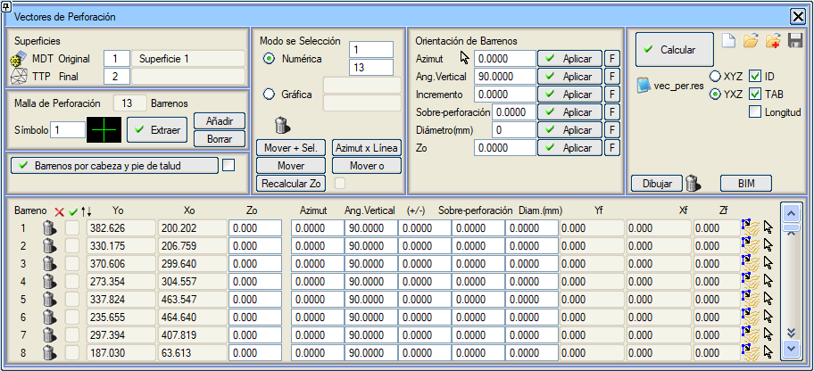
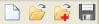
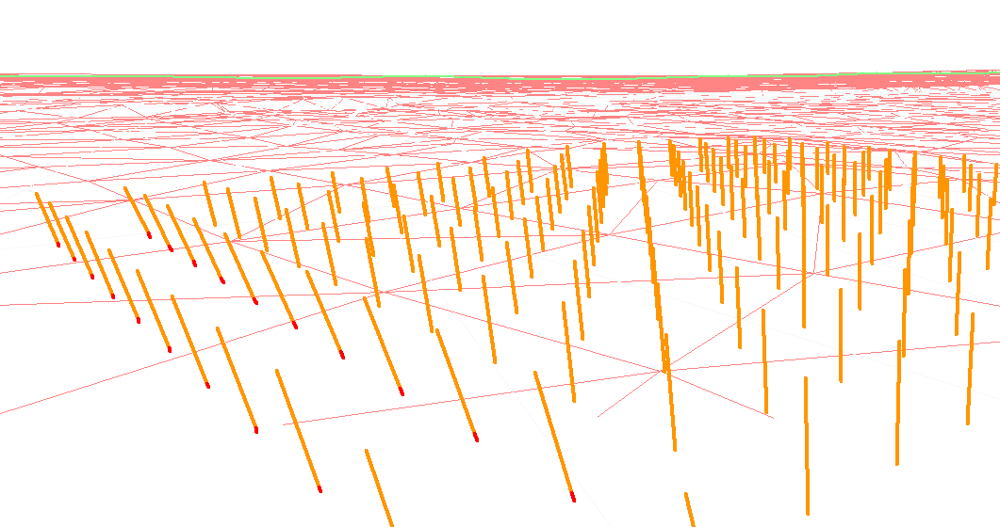
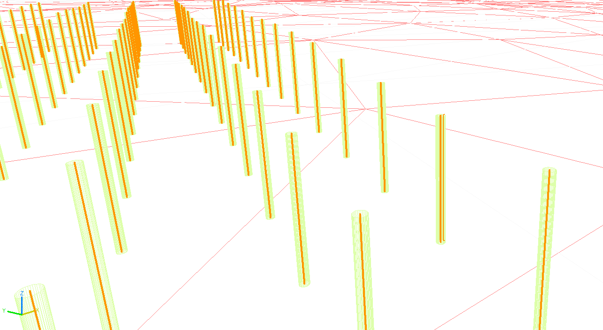
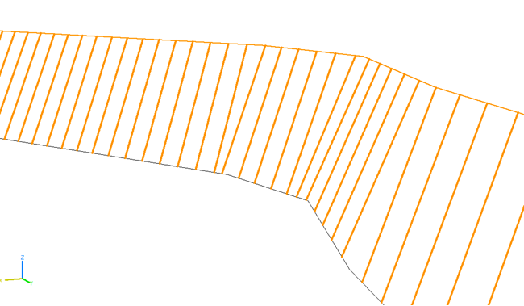

|
|
|
SONDAJ DELGİ VEKTÖRLERİ
|
 Harita üzerinde bir sembol tipiyle tanımlanmış bir delgi deseni'nden yola çıkıyoruz (*.edm, kotlu veya kotsuz sembollerle). SAM Yüzey Kontrolü'nde tanımlanmış herhangi bir türde olabilen bir Orijinal yüzey atıyoruz. Aynı şekilde, ulaşmak istediğimiz Nihai yüzeyi de atıyoruz; bu sadece SAM (TTP) olarak tanımlanabilir. [Çıkar] seçeneği, sembolleri okuyacak ve başlangıç koordinatlarıyla delik listesini dolduracaktır. Sembollerimizin kotu olmaması durumunda, Orijinal yüzeyden otomatik olarak atayacaktır. [Çıkar]'ın yanında bulunan [Ekle] ve [Sil] butonları aracılığıyla grafiksel olarak yeni delikler ekleyebilir/silebiliriz, ayrıca listede görünen çöp kutusu simgesini veya Seçim Modu'ndaki simgeyi kullanarak da silmek mümkündür. Sayısal veya Grafiksel seçim modlarıyla, özellikler atayacağımız delikleri seçeriz. Ayrıca, her satırın solunda görünen kutucukla Delikler listesinin kendisi üzerinde de işaretleme/işareti kaldırma yapmak mümkündür. Deliklerin Yönelimi'nde, seçilen deliklere Uygulayabileceğimiz aşağıdaki özelliklere sahibiz:
Uyguladığımız özellikleri Delikler listesinde tek tek düzenleyebiliriz. Patlatmanın tüm parametreleri tanımlandıktan sonra, deliğin nihai yüzeyle kesişimini belirlemek için [Hesapla]'ya basarız; başlangıç koordinatları (Xo,Yo,Zo), deliğin uzunluğu ve nihai koordinatlar (Xf, Yf, Zf) tanımlanmış olur. [Çizgiye Göre Azimut]: Bu araçla, önceden seçilmiş deliklerin azimutunu bir polilineye dik yönde belirleyebiliriz. [Zo'yu Yeniden Hesapla], Orijinal arazi yüzeyini kullanarak tüm delikler için Zo değerini yeniden hesaplar. Nihai koordinatlar, [Hesapla] kullanılana kadar değiştirilmez. Bu araç için [ ] Uzat seçeneği eklenmiştir: etkinleştirildiğinde, delik arazi yüzeyini arayarak uzatılır veya kısaltılır, ancak azimutunu ve düşey açısını korur. Bu seçenek, orijinal yüzey bir .ttp olduğunda geçerlidir. [Taşı+Seç.] Taşı+Seçilenler seçeneği, aynı ötelemeyi uygulayarak tüm seçili delikleri aynı anda taşımayı sağlar. [Başlangıcı Taşı] bu seçenek, sadece deliğin başlangıç noktasını (başını) taşımayı sağlar, ardışık delikleri seçip taşımaya olanak tanır. Zo ve azimut ile düşey açılar yeniden hesaplanır. Atlas Copco tarafından kullanılan RockManager yazılımı için bir formatta (XYZ veya YXZ) bir vec_per.res listesi oluşturulabilir. ID: vec_per.res listesine nokta numarasını ekler. SEKME: vec_per.res listesinde, sütunların ayrılmasını sekmelerle gerçekleştirir. Uzunluk: vec_per.res listesinde, vektörlerin uzunluğunu listeler.  simgeleriyle, delik listesini temizleyebilir, delik listesini yönelimiyle birlikte yükleyebilir/ekleyebilir/kaydedebilirsiniz. Bu vektörler 3D görünümlerde görüntülenebilir. 3D görünümde, fazla delgi kırmızı renkte çizilir.  Çiz butonuyla, belirttiğimiz çapta deliklerin tel kafes çizimini yaparız. BIM butonuyla, Yüzey modelleme/Delikler klasörü altında BIM ağacında görünecek olan deliklerin BIM modelini oluştururuz: Şev Başı ve Eteğine Göre Delikler: Bu araç, delikler arasındaki mesafeyi ve şev başı ile eteği çizgilerini seçerek, başlangıç ve bitiş koordinatlarını hesaplayarak ve delikleri listeye ekleyerek, ayrıca uzunluk ile azimut ve düşey açıları belirleyerek delikleri oluşturur. Varsayılan olarak, şev başı çizgisine dik olarak yapılırlar; aracın yanındaki kutucuk etkinleştirilerek şev eteğine dik olarak yapılırlar.  |
 butonuyla grafiksel olarak da değiştirebiliriz. Sonuç değeri, diğer deliklere uygulanabilmesi için otomatik olarak doldurulur.
butonuyla grafiksel olarak da değiştirebiliriz. Sonuç değeri, diğer deliklere uygulanabilmesi için otomatik olarak doldurulur. , deliğin eksenini düzenlenebilir bir harita çizgisi olarak aktarmayı sağlar.
, deliğin eksenini düzenlenebilir bir harita çizgisi olarak aktarmayı sağlar. , deliği iki noktalı bir harita çizgisinden tanımlamayı sağlar.
, deliği iki noktalı bir harita çizgisinden tanımlamayı sağlar.